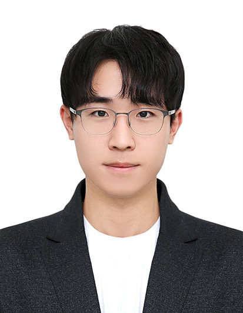

Computational
neuroscience
Algorithms for extracting and analyzing neural activity from complex imaging data.
Computational neuroscience
& machine learning
Postdoctoral Fellow
KAIST · School of Electrical Engineering
I develop computational and AI-driven tools for neuroscience. My work connects neuroscience, electrical engineering, and machine learning—from principled algorithm design to practical imaging pipelines.

National Research Foundation of Korea
Sejong Science Fellow 2026–2031
KAIST
Jang Young Sil Fellow 2026
Research at the intersection of
Neuroscience · AI · Imaging
01 / Updates
Research, fellowships,
and other milestones.
Outstanding Dissertation Award — Top 1 in the Signal Division, KAIST School of Electrical Engineering.
Sejong Science Fellow — Selected for the five-year fellowship (2026–2031), National Research Foundation of Korea.
Jang Young Sil Fellow — Selected as a fellow at KAIST.
Nature Electronics — Self-supervised video processing on a memristor-based platform. Featured in News & Views, an Editorial, and KAIST Breakthroughs.
WACV 2025 · Oral — Design Principles of Multi-Scale J-Invariant Networks for Self-Supervised Image Denoising.
NeurIPS 2024 Top Reviewer — Recognized with complimentary registration.
SUPPORT · Nature Methods — Selected as a cover article and featured in KAIST Breakthroughs.
02 / Research
Turning imaging data into information about the brain.
Algorithms for extracting and analyzing neural activity from complex imaging data.
Learning from noisy observations without requiring clean training targets.
Computational methods for fluorescence microscopy and image reconstruction.
News & Views · Editorial · KAIST Breakthroughs
Read articleCover article · KAIST Breakthroughs
Read article* Equal contribution
03 / Background
From electrical engineering
to computational neuroscience.
KAIST · Advisor: Young-Gyu Yoon
KAIST · Advisor: Young-Gyu Yoon
Outstanding Dissertation Award
Yonsei University · Advisor: Jiwon Seo
National Research Foundation of Korea
KAIST
04 / Recognition
KAIST School of Electrical Engineering
Top 1, Signal Division
KAIST
NeurIPS · Complimentary registration
Association of Korean Neuroscientists · IBS/AKN Pre-doctoral Award
Society for Neuroscience
KAIST EE · Signals and Systems
Korea Foundation for the Advancement of Science and Creativity
05 / Community
Peer review for machine learning
and medical imaging research.
2025 · 5 papers
2024 · 6 papers
2023 · 5 papers
Top Reviewer, 2024
2024 · 4 papers
2023 · 3 papers
2022 · 5 papers
2025 · 4 papers
2024 · 3 papers
Contact
School of Electrical Engineering · KAIST